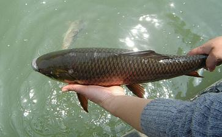

我从真正
这一个多月以来，我要求自己改邪归正，断恶修善，但是做的还并不好，不过我会在
以下是我学佛这一个月一点的小小的感悟和感应，希望能给同修们一点启发和鼓励，想到哪里就说到哪里了，如果语序上有点乱，请不要介意。
我从四月底到现在，一共
数量不多，但是放生后明显感觉自己心情很好，有一点如释重负的感觉，我想大概是自己知道自己在成长的过程中，有很多事情做的不对，造业很多，但是又不知道该如何忏悔，也没有勇气去忏悔，或许放生是一个很好的悔过自新的过程。
第二次放生 比第一次数量多了，因为有以前的经验，而且也做了一点仪式，把鱼儿放到水里后，看见它们欢快游畅，兴高采烈的样子，自己也能感同身受，特别的开心。也就是第二次放生的第二天，我在家里念《
是我目前放生数量最大的一次。当时是在五一期间，由于要出去旅游，可是相机怎么也找不到(此前已经有一两个月都没找到)，我想如果我要出去旅游，还要再买一个相机，一方面是经济不允许，另一方面这个相机用了还不到半年，所以当时很矛盾，就在网上搜索合适的相机。搜索相机时我在想，如果相机能找到，我就用打算买相机的钱拿出一部分来放生，那该多好呀！于是在我念《地藏经》之前就想:我念完这部《地藏经》就找相机，找到后我就去放生。当我这天念完一部《地藏经》后开始翻以前用过的包包，只翻了一个包，相机就出现了！(我在以前的一个月多里，找了很多次，翻了所有的包包，都没找到。)
后来我去菜市场买鱼，把一个箱子里的鲫鱼都买完了装到一个袋子里去称重量，上电子秤一秤，整整100.00元，一分不多，一分不少。当时有点小震惊，我想这是不是也算是一种感应？？？由于之前在网上看说四五月份的鱼肚子里的鱼子特别多，所以这时候很适合放生，我就想再买一些。卖家看我一下子买这么多的鱼，而且要活的，就问我是不是要放生，我只好承认了。她说黑鱼生命力强，别人都买黑鱼放生。由于我之前在网上查了说黑鱼不能放生，所以不要，卖家说黑鱼很适合放生，所以推荐黑鱼。当时我很矛盾，但经验不足，也就买了几条黑鱼。到了放生的地方，我本来想先做仪式
按照惯例，我把卖家的一个箱子里的鱼都买了，到了湖边念了佛号就放到水里了，放进去之后，不像上次那样都不见了(上次只有一条还在)，而是全部都在我放生的不远处不肯离去，其中有三五条鱼儿，欢快的游着，而且还朝着我的方向上上下下跳跃着，同时在露出水面的时候张开嘴巴对着我，至少有三条鱼儿在做这个同样的动作，当时我好开心，我想它们是在用自己的方式表示对我的感谢吧。其他的鱼儿也没有离开，而是静静的在水下等着。当时我的嘴里在念“阿弥陀佛”，声音不大，希望它们都能听到。我念了一小会，想去念经，但是又想鱼儿们都还没游走，那我就等它们都游走了会再去念经也不迟。就这样想了一下，自己坐到草地上，过了没三五分钟，起来再去看它们，全都不见了。我想是不是它们不想“耽搁”我的时间，全部都游走了？！反正当时的感觉很神奇，但也非常的开心。
顺便提一句，之前在网上看别人写的
放生，是积